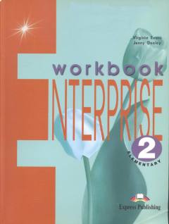

E2Ingliz tili bo'yicha amaliy mashqlar va grammatik topshiriqlar to'plami.
Enterprise 2 Workbook - bu ingliz tilini o'rganuvchilar uchun mo'ljallangan amaliy mashqlar to'plamidir. Kitob turli mavzularni qamrab olgan bo'lib, o'quvchilarning grammatika, lug'at boyligi va yozish ko'nikmalarini mustahkamlashga yordam beradi.